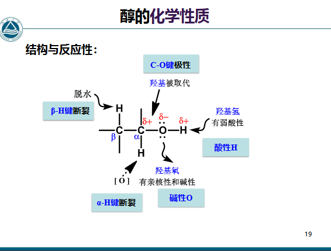
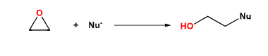

第七章 醇酚醚
章节概览
- 7.1 醇的命名与化学性质（酸性、亲核取代、脱水、氧化、邻二醇反应）
- 7.2 酚的命名与化学性质（酸性、酚醚、酚酯、亲电取代、制备）
- 7.3 醚的分类、命名与化学性质（氧鎓盐、醚键断裂、环氧化物开环）
学习目标（重点）
- 掌握醇、酚、醚的系统命名规则
- 理解醇的化学性质（酸性、亲核取代、脱水、氧化、邻二醇反应）
- 理解酚的酸性及取代基对酸性的影响
- 掌握酚的亲电取代反应及定位规律
- 掌握醚的化学性质（氧鎓盐、醚键断裂、环氧化物开环）
- 理解Williamson合成法的应用
- 掌握频哪醇重排、Claisen重排、Fries重排等重要反应
一、醇
参考资料：有机化学7-1醇酚醚7-1 20260430.pdf | 有机化学7-2醇酚醚7-2 20260507.pdf
1.1 命名规则 命名
命名规则
- 主链：含羟基的最长碳链，编号：从最靠近羟基一端开始，并使其他取代基位次尽可能小
- 不饱和醇：主链要同时包含羟基和双键三键
- -Ar为取代基
- 多元醇标明羟基的编号和个数
1.2 化学性质分析

1.3 反应
(1) 酸性 酸碱反应
(2) 碱性 酸碱反应
和无机酸成酯，比如和硫酸。
(3) 亲核取代 取代
| 反应类型 | 反应式 | 条件 | 特点 |
|---|---|---|---|
| 与HX反应 | 酸催化 | （烯丙醇、苄基醇、仲醇、叔醇）或（小位阻伯醇）；活性：烯丙醇，苄基醇>叔醇>仲醇>伯醇；HX活性：HI>HBr>HCl | |
| Lucas试剂 人名反应 | ZnCl₂催化 | 鉴别醇的类型；叔醇立即反应，仲醇几分钟，伯醇需加热 控温 控pH反应 | |
| 与PX₃/PX₅反应 | - | X=Br,I；机理，构型翻转；叔醇走 立体选择性 | |
| 与SOCl₂反应 | 加热 | 最常用的制备氯代烃的方法；构型与溶剂有关：非极性溶剂构型保持，极性溶剂构型翻转 立体选择性 控温 脱气体 |
反应机理
与HX反应机理见屏幕截图 2026-05-31 131322.png；与PX₃反应机理见屏幕截图 2026-05-31 133105.png
{kind=link}
{kind=link}
(4) -H断裂
| 反应类型 | 反应式 | 条件 | 特点 |
|---|---|---|---|
| 分子内脱水 | Lewis酸催化（, , ） | 走E1；活性：；遵循Zaitsev规则 人名反应；高温下不重排 控温 控pH反应 | |
| 分子间脱水 | 酸催化，加热 | 走；伯醇、仲醇成醚；叔醇走E1；低温利于成醚，高温利于成烯烃 控温 控pH反应 |
扎伊采夫规则
生成双键碳上取代基较多的稳定烯烃；烯丙型、苄基型醇脱水时形成稳定的共轭烯烃。
(5) -H断裂——氧化 氧化
| 氧化剂 | 适用范围 | 特点 |
|---|---|---|
| 或 | 伯醇→羧酸，仲醇→酮 | 强氧化剂，会氧化不饱和烯烃炔烃 |
| Sarrett试剂 人名反应 | 伯醇→醛，仲醇→酮 | ；不氧化双键三键；适合碱性环境 控pH反应 |
| Jones试剂 人名反应 | 伯醇→醛，仲醇→酮 | ；效果同Sarrett试剂；适用于酸性环境 控pH反应 |
| 只氧化烯丙基醇 | 不氧化其他羟基，不氧化双键： | |
| Oppenauer氧化 人名反应 | 仲醇→酮 | 异丙醇铝或叔丁醇铝存在下，与丙酮反应；见醛酮 |
(6) 邻二醇的反应
| 反应类型 | 反应式 | 条件 | 特点 |
|---|---|---|---|
| 高碘酸氧化 | - | 三元醇中间碳被氧化两次→羧酸；环邻二醇开环→链状二醛酮 | |
| 频哪醇重排 人名反应 | 酸性环境 | 生成频哪酮；机理见屏幕截图 2026-05-31 143451.png；基团迁移能力：-Ar > -R > H 控pH反应 |
{kind=link}
频哪醇重排特点
有碳正离子，优先生成稳定的碳正离子；重排可以成螺环化合物，见屏幕截图 2026-05-31 143705.png
{kind=link}
(7) 硫醇
-SH为巯基，优先级不如羟基，命名时XX醇变成XX硫醇即可。
(8) 醇的制备
| 方法 | 说明 |
|---|---|
| 烯烃水合 | 硫酸水解、硼氢化氧化 加成 |
| 卤代烃水解 | - 取代 |
| 格氏试剂加成 | 与醛酮加成后水解 人名反应 |
二、酚
2.1 命名规则
命名规则
- -OH为主体：-OH为一号位，依次编号，含两个羟基叫二酚
- -OH不为主体，就作为取代基
2.2 反应
(1) 酸性 酸碱反应
酸性顺序
碳酸 > PhOH > 水 > ROH
酸性解释
原理：-共轭，使得电离增大。
- Ph上EWG多，酸性更高（如苦味酸 > 碳酸）
- Ph上EDG多，酸性减弱
- 取代基邻对位影响 > 间位 -C
(2) 酚醚
| 反应类型 | 反应式 | 条件 | 特点 |
|---|---|---|---|
| Williamson合成 人名反应 | 碱性环境 | 尽量使用伯卤代烷 取代 控pH反应 | |
| 硫酸二甲酯甲基化 | 碱性环境 | - | |
| Claisen重排 人名反应 | 高温 | 芳基烯丙基醚重排为邻烯丙基酚；o位被占据则重排到p位；都被占据则不重排；机理见屏幕截图 2026-05-31 151124.png 控温 [[术语#ph上的位置关系 |
{kind=link}
(3) 酚酯
如果有醇羟基和酚羟基，不用羧酸（羧酸更容易和醇羟基反应），应该用酰氯或酸酐，才能形成酚酯。
(4) Fries重排 人名反应
酚酯在催化下，酰基重排到酚羟基的o,p位：
- 低温：p位（动力学控制）
- 高温：o位（热力学控制）
实质是反应 控温
(5) 亲电取代 取代
| 反应类型 | 特点 |
|---|---|
| 卤代 | 苯酚溴代上三个Br；低温或非极性溶剂中，停留在p位一卤代阶段 控温 |
| 亚硝化 | 控pH反应 |
| 磺化 | 低温动力学控制→o位；高温热力学控制→p位 控温 |
| Friedel-Crafts反应 人名反应 | 不可用（会络合），需用或质子酸；常用Claisen和Fries重排代替 控pH反应 |
(6) Kolbe-Schmidt反应 人名反应
用引入羧基：
(7) 氧化 氧化
被氧化成苯醌。
(8) 与反应
变成蓝紫色，显色反应；原理是烯醇结构可以与三氯化铁反应。
(9) 酚的制备
| 方法 | 反应式 | 说明 |
|---|---|---|
| 芳香磺酸盐碱熔法 | -Ar上有EWG不适用（如-X、硝基、羧基）控pH反应 | |
| 异丙苯氧化法 | 仅限于制备苯酚 控pH反应 | |
| 卤代芳烃水解 | o,p位连EWG时更易发生 控pH反应 |
三、醚
3.1 分类
| 类别 | 定义 |
|---|---|
| 简单醚 | 两个烃基相同 |
| 混合醚 | 两个烃基不同 |
| 环醚 | 醚中的氧是环的一部分（环氧化合物） |
| 硫醚 | 氧原子被硫取代 |
| 冠醚 | 大环多醚 |
3.2 命名规则
命名规则
- 简单醚：烃基+醚，饱和烃基省去“二”，不饱和烃基则不能省略
- 混合醚：不同取代基按英文首字母顺序列出，加后缀“醚”
- 复杂醚：取长的烃基为母体，把较简单烃氧基作为取代基
- 环醚一般称为环氧某烃
3.3 反应
(1) 氧鎓盐 鎓离子
醚中氧原子上有未共用电子对，可作为Lewis碱与Lewis酸及强质子酸反应，生成𰽽盐：
可用于醚的分离纯化。
(2) 醚键的断裂 取代
用HI可以断裂醚键：
断裂规律
- 脂肪醚：走，断裂发生在含碳原子较少的烷基处（小基团得碘代烷，大基团得醇）
- 芳香醚：一般得酚和卤代烃
- 叔碳：消除得烯烃 消除
(3) 过氧化物 取代
醚的-H容易发生自由基取代，和氧气反应生成位的，易爆，需要用除去。
(4) 醚的制备
| 方法 | 反应式 | 说明 |
|---|---|---|
| 醇脱水 | 见醇的分子间脱水 | |
| Williamson合成法 人名反应 | 不可用叔卤代烃（会消除）；不可用Ph-X（不活泼）；Bn-X活泼，适合使用 取代 消除 |
(5) 环氧化物开环

开环特点
走，酸碱性条件都可进行，但酸性条件有的区域选择性 控pH反应。
| 条件 | 进攻位置 | 立体化学 |
|---|---|---|
| 碱性条件 | Nu进攻位阻小的C | 背面进攻，反式开环 立体选择性 |
| 酸性条件 | Nu进攻-R取代基多的C | 背面进攻，反式开环 立体选择性 |
(6) 环氧化物的制备
| 方法 | 反应式 | 说明 |
|---|---|---|
| 烯烃氧化 氧化 | 催化氧化 | |
| 卤代醇制备 | 先加成后消除 控pH反应 |
知识检查
AI 认为需要修正的内容：
- “Lucas试剂：” → 符号应为或，表示浓盐酸，原文写法不够规范。
- “频哪醇重排有碳正离子，所以优先生成稳定的碳正离子” → 正确，但更准确地说，是羟基质子化后离去形成碳正离子，然后邻位基团迁移形成更稳定的碳正离子（氧鎓离子）。
- “Fries重排实质是” → 正确，Fries重排是亲电芳香取代反应，酰基正离子进攻酚环。
- “环氧化物开环两种情况都是走” → 正确，但酸性条件下环氧化物质子化后，氧原子带正电，增加了环上碳原子的亲电性，Nu倾向于进攻取代基多的碳（类似的区域选择性），但立体化学仍为的背面进攻。
相关笔记
- 命名 — 有机化合物命名规则
- 术语 — 有机化学常用术语表
- 醛酮 — Oppenauer氧化反应
- 卤代烃 — 醇的卤代反应、Williamson合成法
- 不饱和烃和共轭体系 — 醇脱水制备烯烃
- 芳烃和芳香性 — 酚的酸性与反应
- 羧酸及其衍生物 — 羧酸与醇的酯化反应
- 立体化学 — 环氧化物开环的立体化学
整理自：课堂笔记及参考课件